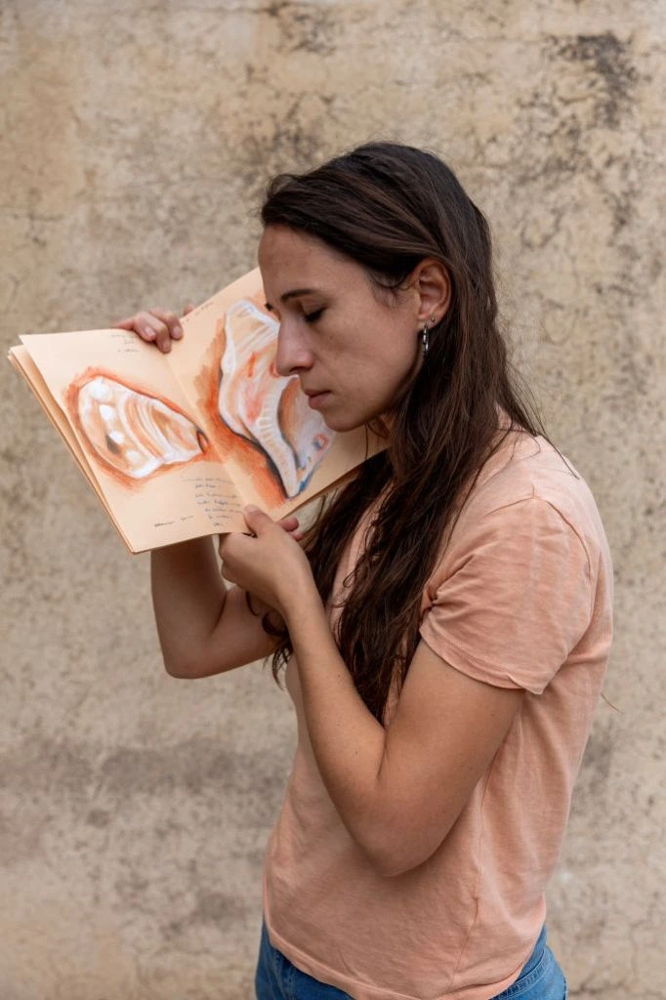
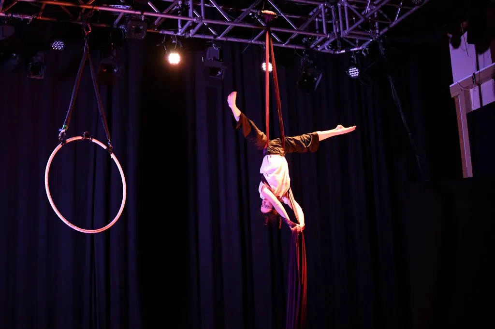
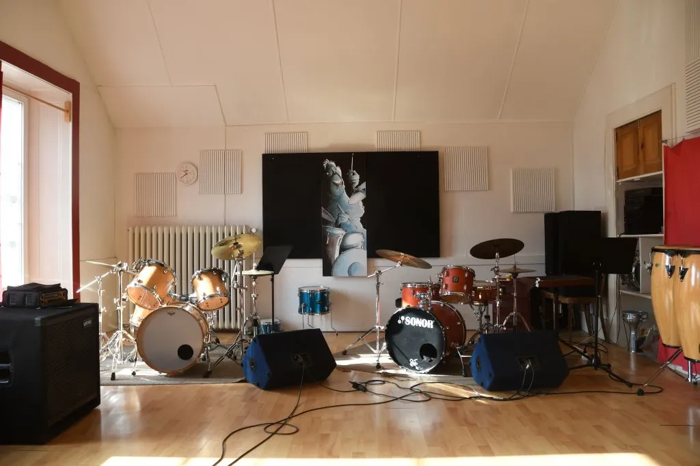
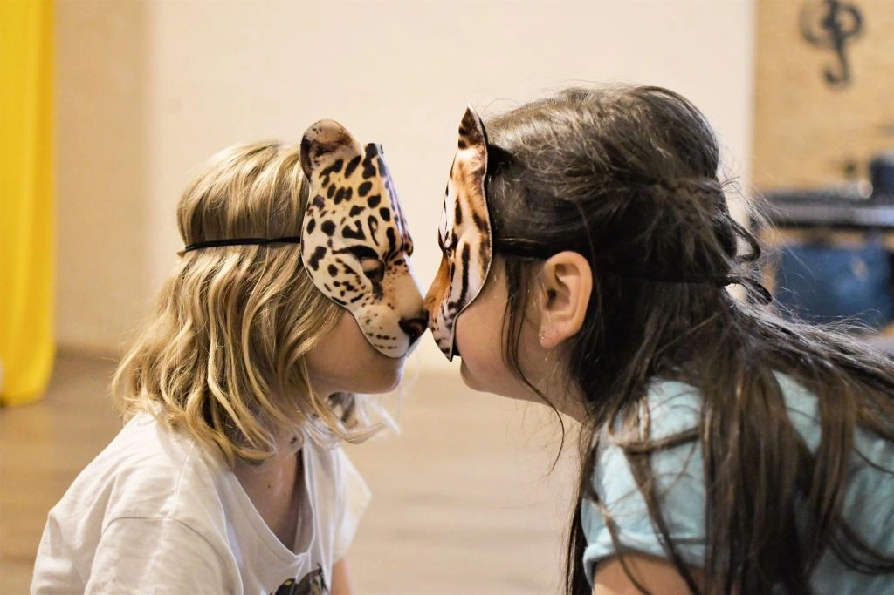
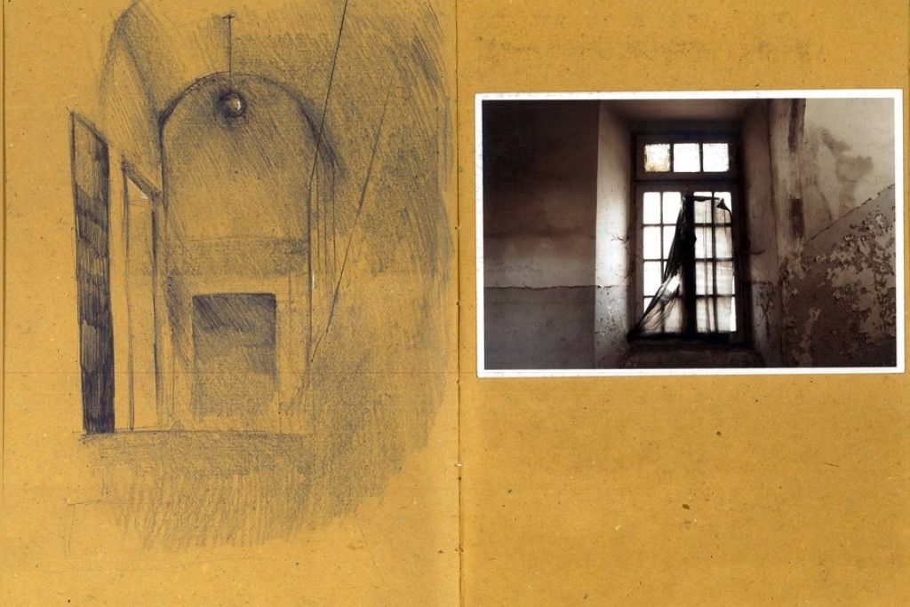
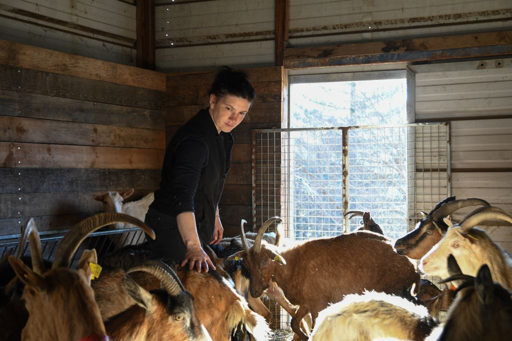

{kind=link}
Spettacolo
Fotografia di spettacoli teatrali e musicali
Il mio lavoro si concentra sulla documentazione di comunità marginali, tradizioni rurali e territori in trasformazione. Attraverso la fotografia, il video documentario e l'installazione sonora, esploro le relazioni tra ambiente, memoria collettiva e identità culturale.
Dal 2019 sviluppo progetti che intrecciano fotografia documentaria, tecniche antiche di stampa (callitipia, polaroid su carta artigianale) e installazioni multimediali. Le mie ricerche si focalizzano particolarmente sul ruolo delle donne nelle comunità rurali, sulla preservazione della memoria storica e sull'impatto del cambiamento climatico sui territori dell'entroterra mediterraneo.

Ricerca di reportage attraverso i temi della memoria, spopolamento e cambiamento climatico.
lavoro tra Roma e l'Estero sul tema dello spopolamento e cambiamenti climatici, con focus sul ruolo delle donne.
Parallelamente alla ricerca artistica, partecipo a mostre collettive, collettivi fotografici e residenze artistiche. Lavoro a Roma come fotografa di eventi sportivi (nuoto, calcio) con sistema di vendita immediata.
Ricerca visiva su comunità, territori e memoria collettiva
Narrazioni audiovisive e archivi orali di tradizioni locali
Opere site-specific con elementi sonori e partecipativi
Mi occupo di stampa in analogico, in proprio, e tecniche di stampa antica. Realizzo libri d'artista come racconto di indagine sul territorio.
"Attraverso la fotografia e l'installazione, restituisco voce a comunità invisibili, preservando memoria e tradizioni in dialogo con il presente"
Mostre, residenze artistiche e formazione
Progetto in duo con Louises Will, in mostra dal 6/03/2026 al 30/03/2026 presso Istitut Français di Napoli, a cura di Fabien Flori
23/09/2025-31/09/2025 "Best artist in Gerace" a cura di Paratissima presso Gerace (RC)
03/03/2025-04/04/2025 "Nuovo Grand Tour" a cura dell’Istituto Italiano di cultura di Parigi, e Popularte, Lozzi, Corsica
Mostra personale "Poetica delle rovine contemporanee"
Committenza e ricerca artistica: spettacolo, interni, eventi e progetti personali sul territorio e sulle donne

Fotografia di spettacoli teatrali e musicali

Fotografia di interni d'arredamento e design

Fotografia di eventi culturali e sociali

Libro d'artista sugli ex ospedali psichiatrici di Teramo e L'Aquila
Manifestazioni e cortei nelle strade di Roma, con lo sguardo rivolto alle donne

Residenza "Nuovo Grand Tour" a Lozzi, Corsica — marzo 2025
Per committenze, collaborazioni, mostre o semplicemente per parlare di un progetto
Raccontami il tuo progetto: un evento da documentare, uno spazio da fotografare, una collaborazione artistica. Rispondo di solito entro un paio di giorni.
{kind=link}
{kind=link}
{kind=link}
{kind=link}
{kind=link}